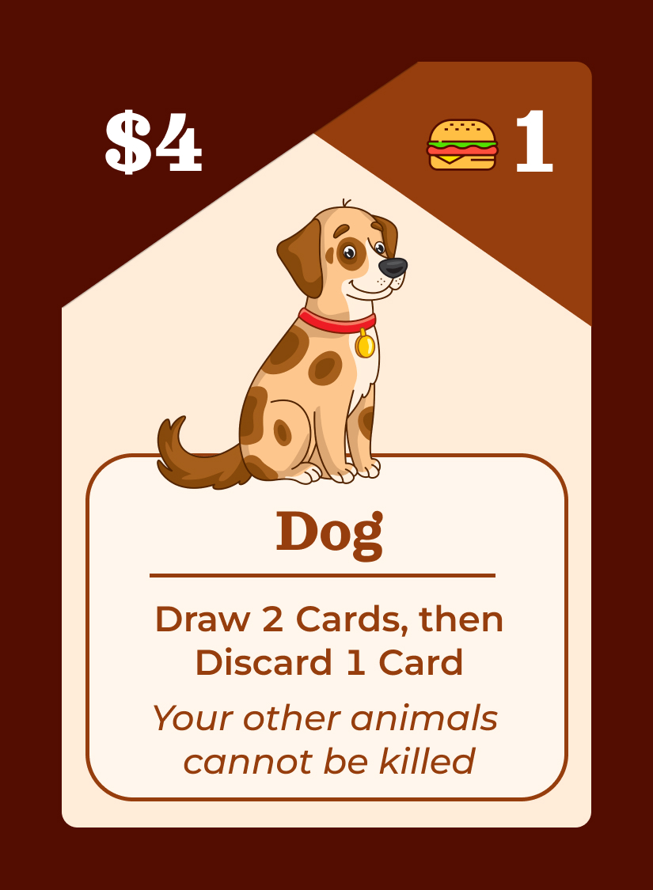
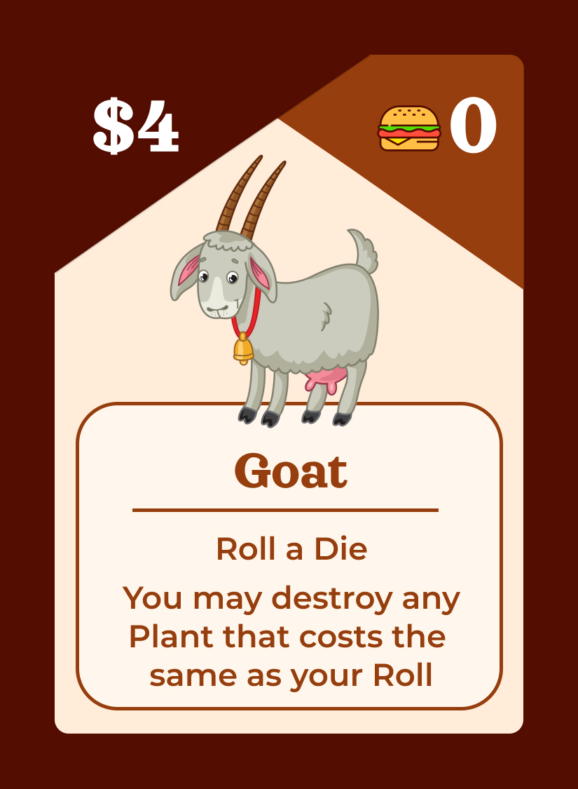
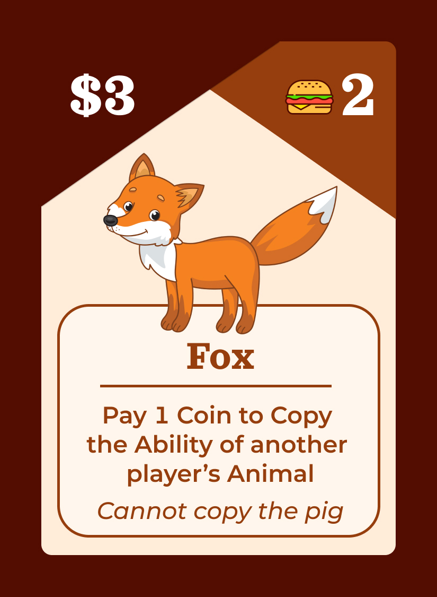
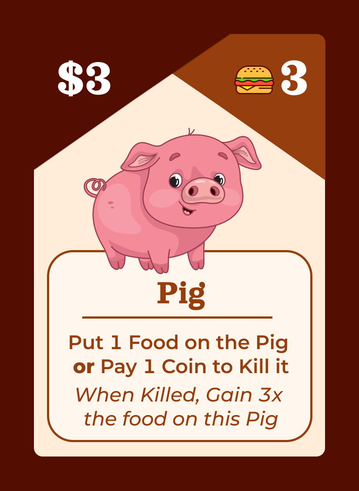
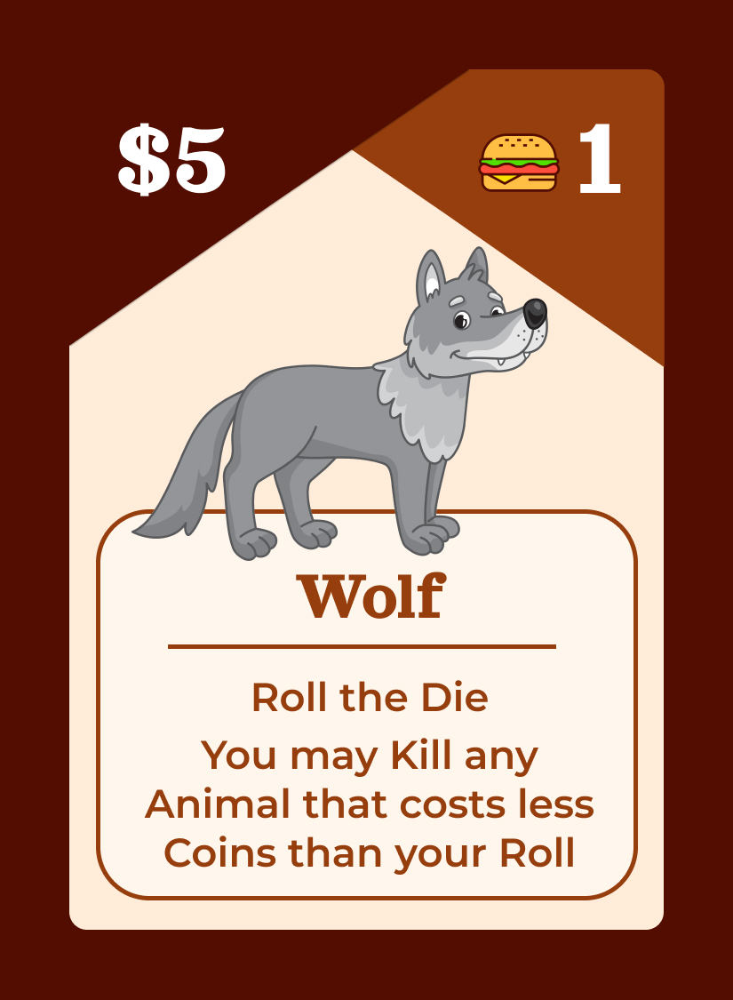
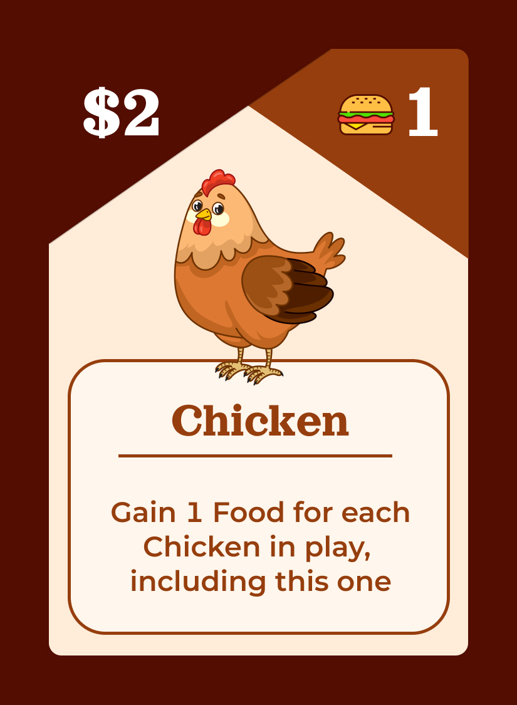

CORN
You cannot copy another player's animal.
Only copy the part of the ability that is not italicized.
You can either Gain 1 Coin or Pay 2 Coins to Copy, not both.
You cannot copy another player's animal.
Only copy the part of the ability that is not italicized.
You can either Gain 1 Coin or Pay 2 Coins to Copy, not both.

DOG
The Wolf can kill the Dog.
Once the Dog is dead, your other animals can also be killed.
You can kill your own pig even if you have a dog.
If you have 2 Dogs, none of your animals can be killed, including the dogs.
The Wolf can kill the Dog.
Once the Dog is dead, your other animals can also be killed.
You can kill your own pig even if you have a dog.
If you have 2 Dogs, none of your animals can be killed, including the dogs.

GOAT
You decide which plant to destroy AFTER rolling the die.
The number facing on the die must match the Coin cost of the Plant. For example, a 5 can only destroy a Tomato
You decide which plant to destroy AFTER rolling the die.
The number facing on the die must match the Coin cost of the Plant. For example, a 5 can only destroy a Tomato

FOX
You cannot copy one of your own animals.
Only copy the part of the ability that is not italicized, for example if you copy the Dog, ignore the italics about your other animals.
You can copy another fox, but if you do you must pay another coin for this fox, but it does allow you to then copy one of your own animals, something a fox cannot normally do.
You cannot copy one of your own animals.
Only copy the part of the ability that is not italicized, for example if you copy the Dog, ignore the italics about your other animals.
You can copy another fox, but if you do you must pay another coin for this fox, but it does allow you to then copy one of your own animals, something a fox cannot normally do.

PIG
Gain 1 Food and place it on the Pig card. Food here cannot be spent. It also cannot be stolen from the raccoon or from other players when the food runs out*.
You can kill your own pig even if you have a dog.
When the pig is killed, count the number of Food on the pig and multiply it by 3, Gain that much food.
*It can be stolen if that is the only way a player can gain food, meaning no one else has food
Gain 1 Food and place it on the Pig card. Food here cannot be spent. It also cannot be stolen from the raccoon or from other players when the food runs out*.
You can kill your own pig even if you have a dog.
When the pig is killed, count the number of Food on the pig and multiply it by 3, Gain that much food.
*It can be stolen if that is the only way a player can gain food, meaning no one else has food

WOLF
You decide which animal to destroy after rolling the die.
When deciding if you can kill an animal, ignore the food cost and only compare the dice roll with the Coin cost. If the coin cost is lower than your roll, kill the animal.
You cannot kill the cat.
You decide which animal to destroy after rolling the die.
When deciding if you can kill an animal, ignore the food cost and only compare the dice roll with the Coin cost. If the coin cost is lower than your roll, kill the animal.
You cannot kill the cat.

CHICKEN
Count the number of Chickens currently in play, including this one. Gain that many Food. If you have multiple chickens, they both count towards this number.
Count the number of Chickens currently in play, including this one. Gain that many Food. If you have multiple chickens, they both count towards this number.